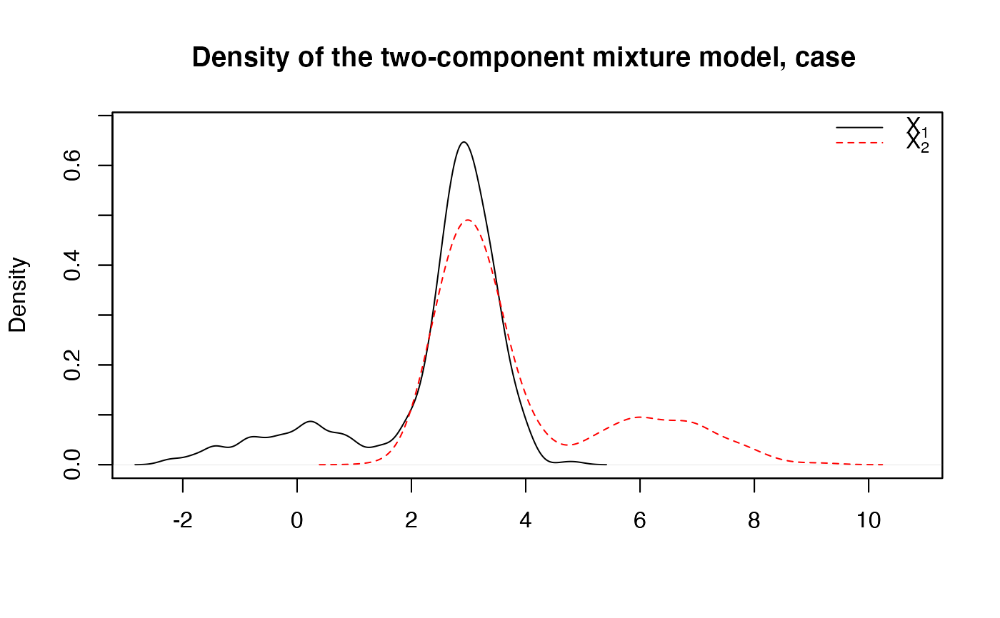

R/two_samples_test.R
two_samples_test.RdTest hypothesis on the unknown component of admixture models using different estimation techniques, and different testing strategies.
two_samples_test( sample1, sample2, known.p = NULL, comp.dist = NULL, comp.param = NULL, method = c("ICV", "Poly"), n_sim_tab = NULL, K = 3, support = c("Real", "Positive", "Integer", "Bounded.continuous"), est.method = c("BVdk", "PS"), s = 0.49, nb.ssEch = 2, var.explicit = F, nb.echBoot = NULL, bounds.supp = NULL, parallel = FALSE, n_cpu = 2 )
| sample1 | First observed sample with mixture distribution given by l1 = p1*f1 + (1-p1)*g1, where f1 and p1 are unknown and g1 is known. |
|---|---|
| sample2 | Second observed sample with mixture distribution given by l2 = p2*f2 + (1-p2)*g2, where f2 and p2 are unknown and g2 is known. |
| known.p | (default to NULL) The true component weights p1 and p2 if known, only useful in simulation studies. |
| comp.dist | A list with four elements corresponding to the component distributions (specified with R native names for these distributions) involved in the two admixture models. The two first elements refer to the unknown and known components of the 1st admixture model, and the last two ones to those of the second admixture model. If there are unknown elements, they must be specified as 'NULL' objects. For instance, 'comp.dist' could be specified as follows: list(f1=NULL, g1='norm', f2=NULL, g2='norm'). |
| comp.param | A list with four elements corresponding to the parameters of the component distributions, each element being a list itself. The names used in this list must correspond to the native R argument names for these distributions. The two first elements refer to the parameters of unknown and known components of the 1st admixture model, and the last two ones to those of the second admixture model. If there are unknown elements, they must be specified as 'NULL' objects. For instance, 'comp.param' could be specified as follows: : list(f1=NULL, g1=list(mean=0,sd=1), f2=NULL, g2=list(mean=3,sd=1.1)). |
| method | Method used for testing. Choose either 'Poly' or 'ICV'. 'Poly' refers to comparison of expansion coefficients in polynomial orthonormal basis, whereas 'ICV' refers to the Inner Convergence property obtained when using the IBM approach. More details are provided below in 'Details'. |
| n_sim_tab | (Only with 'ICV' method) Number of simulated gaussian processes used for the tabulation of the Inner Convergence distribution in IBM approach. |
| K | (Only for 'Poly' method) Number of coefficients considered for the polynomial basis expansion. |
| support | (Only for 'Poly' method) Support of the densities under consideration, useful to choose the polynomial orthonormal basis. One of 'Real', 'Integer', 'Positive', or 'Bounded.continuous'. |
| est.method | (Only for 'Poly' method) Either 'BVdk' (Bordes and Valdekerkhove estimation technique) or 'PS' (Patra and Sen estimation technique). The latter should not be used since the estimators plugged into the test statistic are not square-root n consistent. More details are given in Section 'Details' below. |
| s | (Only for 'Poly' method) Rate at which the normalization factor is set in the penalization rule for model selection (in ]0,1/2[). |
| nb.ssEch | (Only with 'Poly' method) Number of subsamples created from original data to decorrelate the estimation of the parameters. |
| var.explicit | (Only with 'Poly' method) Boolean that enables to choose between explicit evaluation of the variance of the test statistic or not (FALSE=bootstrap). FIXME: it seems that bootstrap procedure does not work in the context of admixtures. |
| nb.echBoot | (Only with 'Poly' method) Number of bootstrap samples if 'var.explicit' is set to FALSE. |
| bounds.supp | (Only with 'Poly' method) default to NULL. Useful if support = 'bounded.continuous', a list of minimum and maximum bounds, specified as follows: list( list(min.f1,min.g1,min.f2,min.g2) , list(max.f1,max.g1,max.f2,max.g2) ) |
| parallel | Boolean to indicate whether parallel computations are performed (speed-up the tabulation). |
| n_cpu | Number of cores used when parallelizing. |
The decision of the test with further information such as p-value and others, depending on the method used.
Here as some details concerning the different methods that can be choosen: i) 'Poly' relies on two-sample testing strategy where each unknown component density is decomposed in an orthonormal polynomial basis, and the estimation of the component weights related to the two two-component admixture models can be performed either using Patra and Sen estimator (despite the latter is not square-root n consistent and thus should not be used in such hypothesis tests), or by Bordes and Vandekerkhove estimation technique (if the unknown component density is symmetric); ii) 'ICV' refers to Inversion - Best Matching strategy which has no constraints except that we need to handle two samples.
Xavier Milhaud xavier.milhaud.research@gmail.com
##### Under the null hypothesis H0 : ## Simulate data: list.comp <- list(f1 = "norm", g1 = "norm", f2 = "norm", g2 = "norm") list.param <- list(f1 = list(mean = 3, sd = 0.5), g1 = list(mean = 0, sd = 1), f2 = list(mean = 3, sd = 0.5), g2 = list(mean = 6, sd = 1.2)) sample1 <- rsimmix(n=600, unknownComp_weight=0.8, comp.dist = list(list.comp$f1,list.comp$g1), comp.param = list(list.param$f1,list.param$g1))[['mixt.data']] sample2 <- rsimmix(n=700, unknownComp_weight=0.7, comp.dist = list(list.comp$f2,list.comp$g2), comp.param = list(list.param$f2,list.param$g2))[['mixt.data']] plot_admix(sample1, sample2, NULL, support='continuous')##### Performs the test by the different methods : list.comp <- list(f1 = NULL, g1 = "norm", f2 = NULL, g2 = "norm") list.param <- list(f1 = NULL, g1 = list(mean = 0, sd = 1), f2 = NULL, g2 = list(mean = 6, sd = 1.2)) ## 1) Using expansion coefficients in orthonormal polynomial basis: two_samples_test(sample1=sample1, sample2=sample2, comp.dist=list.comp, comp.param=list.param, method = 'Poly', K = 3, support = 'Real', est.method = 'BVdk', s = 0.4, nb.ssEch = 2, var.explicit = TRUE)#> $decision #> [1] 0 #> #> $p_value #> [1] 0.8109152 #> #> $test_statistic #> [1] 0.05723845 #> #> $varCov.matrix #> [,1] [,2] [,3] #> [1,] 2.377143 NA NA #> [2,] NA 74.83848 NA #> [3,] NA NA 1424.943 #> #> $rank #> [1] 1 #> #> $p1 #> [1] 0.8033032 #> #> $p2 #> [1] 0.6927917 #>## 2) Second, using Inversion-Best Matching and the associated Inner Convergence property: two_samples_test(sample1=sample1, sample2=sample2, comp.dist=list.comp, comp.param=list.param, method = 'ICV', n_sim_tab = 8, parallel = TRUE, n_cpu = 2)#> $test.stat #> [1] 0.1286629 #> #> $decision #> 95% #> FALSE #> #> $p_val #> [1] 0.4285714 #> #> $weights #> [1] 0.7980118 0.7024209 #>